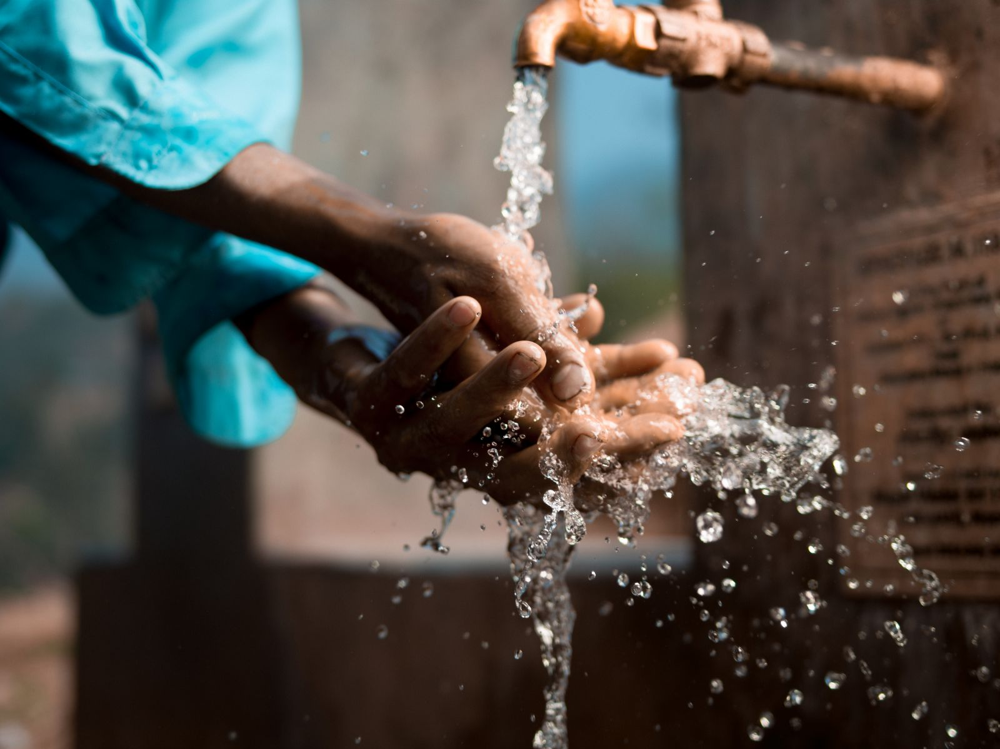
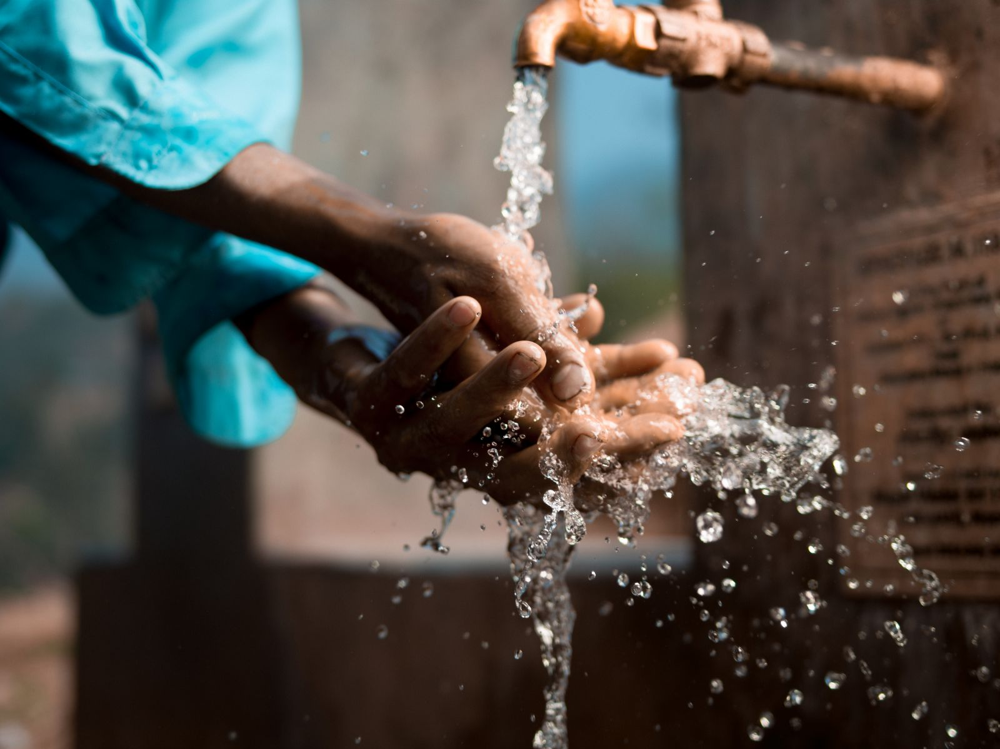

Be the Reason a Village Has Clean Water
Charity: water gives socially conscious students the tools to make a change in the water crisis by funding clean, safe drinking water projects with 100 percent of public donations. Every project is mapped, measured, and reported to provide significant, long-lasting impact that the next generation of nonprofit leaders can count on.
At charity:water, we provide clean and safe drinking water to those in the developing world by utilizing 100 percent of public donations to directly fund water projects, with complete transparency through tracked progress and data-driven impact reports. We enable changemakers like you who believe in measurable outcomes and long-term global development.


 
